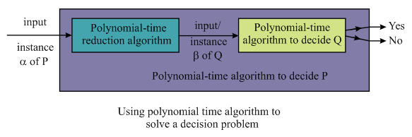

Independent set of a graph G represents the set or collection of vertices that are not adjacent to one another. It is a concept in graph theory according to which there should not be any edge connecting the two vertices of a set.
• It is also known as a stable set in which an edge can have at most single endpoint in the graph.
• Thus, the vertices contained in the independent set represent the subset of the vertices of a graph.
Consider the figure or the graph given below containing an independent set of size 3:
a .
Consider a graph  containing
V vertices and set of edges E. Here, it is required
to devise a decision problem for the independent–set problem
and proving that it is NP-complete.
containing
V vertices and set of edges E. Here, it is required
to devise a decision problem for the independent–set problem
and proving that it is NP-complete.
Decision problem:
• It is a way of asking the question in order to determine that whether a solution or answer of a particular question exists or not.
• It is a type of problem in a formal system in which the answer or solution of the problem comes out to be in two definite forms as either Yes-or-No.
Consider the following example:
Graph coloring, Hamiltonian cycle or graph, Travelling Salesman Problem (TSP) is some of the common examples of the decision problems (All these can also be expressed as an optimization problem).
• Decision problem is related to the optimization problem which aims at finding the best or optimized solution to the problem.
• These types of problems generates only two states of outputs such as True-false, 0-1 or Yes-No on a set of any number or infinite set of inputs.
Figure given below outlining the definition of a decision problem with its possible outputs:
Independent set problem:
• It is one of the examples of an optimization problem which aims at finding the largest or the maximum set of the vertices that are not adjacent to one another.
• It is feasible to covert or transforms an independent set problem as a decision problem to easily generate the uniform type of outputs (Yes or NO) as compared with the optimization problems which are harder and little complex to solve.
Independent set problem can be formulated as a decision problem as given below:
Input (Instance): Given an undirected Graph G with V vertices, E edges and a lower bound or an integer N.
Question: Does a Graph G contain an integer N such that there exists at least a set P of non-adjacent or independent set of vertices of cardinality or max size N?
Output: Yes, there exists such an independent set P of vertices of size at most N.
Now, it is also asked to show that the Independent Set Problem is NP complete. For proving that the independent set problem is NP complete, it is required to show that it is NP as well as NP-hard.
NP: Given an independent set S of an undirected graph G is NP if there exists polynomial time algorithm taking an instance or object of the problem and as a certificate which are the set of the vertices that can be passed as the parameters. The algorithm considered will check whether all the vertices of the certificate are available in the graph and also it will check that there should not be any edge connecting the pair of vertices of the certificate.
The running time complexity of this algorithm is  which is
simply a polynomial time and thus, it can be stated that an
independent S belongs to NP.
which is
simply a polynomial time and thus, it can be stated that an
independent S belongs to NP.
In order to prove that the independent set problem is NP-hard, the polynomial time reduction of an instance of a Clique problem should be transformed in such a manner that the true input or instance of a clique problem’s should be mapped with a true instance of an independent set.
• Consider the instance of the Clique problem as. This
problem is independent set problem having set where the
symbol is
complement of .
.
• The set of vertices  represents
a clique having size x is in the graph
represents
a clique having size x is in the graph  only in a
case if is an
independent set of graph having the
size of x, and it also following the fact that the
construction of from the
must be done in polynomial time.
only in a
case if is an
independent set of graph having the
size of x, and it also following the fact that the
construction of from the
must be done in polynomial time.
In this regard, it can be concluded that independent set problem is also NP-hard. Thus, as it has been proved that an independent set problem is NP as well as NP-Hard so it can be said that it is always NP-complete, which are the hardest problems in NP.
b.
Given a “black-box” subroutine to solve the decision
problem defined in part (a) and a graph.Here, it is
asked to give an algorithm which can be used to find an independent
set of maximum size. To implement an algorithm for solving the
above problem consider black-box as .
Algorithm:
// perform search operation
Step1: Start binary search on B to determine the maximum size for the independent set.
// initialization step
Step2: Set the independent set  to be an
empty set.
to be an
empty set.
Step3: for each 
Construct by removal
of  and its related edges from the graph
and its related edges from the graph
Step 4: if (
Set
else
Here, is obtained
by removal of all the vertices which are connected to v and
the edges which are linked to it from the graph.
// end
Here, Step 1 has time complexity of.
Step2: It has the complexity of .
.
Step-3, 4: They have the number of iterations equal to
Hence, the vertex in graph which is
obtained at last is independent set of size by the
construction.
Hence, it can be concluded that the time complexity is equal to .
c.
Given that the degree of the graph G is 2, which implies that each vertex in the graph has a cardinality or degree 2.
Here, it is required to give an algorithm that can solve the independent set problem of a graph having degree 2. Also, it is required to analyze the running time and the correctness of an algorithm.
As, it can be noticed that when a degree of the graph is 2 then, in order to solve the problem of an independent set we must have the graph as a simple cycle.
Consider the graphs given below of degree 2 and thus, containing a simple cycle.
• Thus, from the above graphs it can be observed that generally the graph containing the vertices of degree 2 is a simple cycle.
• Therefore, the independent set problem in such a case can be achieved by initiating at any vertex and start choosing the alternate vertex on the cycle till the size obtained for the independent set to be.
Hence, it can also be concluded that the running time of the algorithm to solve the problem of independent set having V vertices, E edges and degree of each vertex as 2 is.
Consider the graph of degree 2 given below having vertices A, B, C, D and the set of four edges connecting them:
Start the process from vertex A. Now, according to the algorithm, proceed the traversal by picking up an alternate vertex and thus, vertex C would be chosen, leaving behind the vertex B. After choosing the vertex C, vertex D will not be picked and the algorithm stops with independent set containing the verticesand having size.
Hence, the solution obtained by applying the algorithm on the graph of degree 2 is a maximum independent set of size 2 which is.
Thus, the algorithm devised above is accurate and it will work correctly.
d.
Here, it is required to give an algorithm to solve the independent set problem in case of a bipartite graph G.
• A bipartite graph commonly known as the bigraph is an undirected graph whose vertex set can be partitioned or arranged into two disjoint sets that are independent.
• It is possible to color this type of graph by using the two colors only so it is 2 colorable or bi-chromatic.
• There are several applications of these graphs like in case of matching problems.
For example:
Consider a bipartite graph given below containing two set of vertices V1 and V2, such that and each edge is having the different color vertices as the end points.
In the graphs shown above, and are the two independent set of vertices that are not adjacent to one another.
In a bipartite graph the matching is a group of edges such that any of its edges do not share the same end points. A vertex, included in the matched set of edges, is the vertex is used in creation of a matched edge is called as the saturated vertex.
For example:
Consider the graph below which highlights the edges of matched set M:
The matching set is as:

Matching is also called as maximal matching if there is no more edges that can be included into the matching set M and it’s called the ideal or the perfect matching if no unmatched vertex is found.
In a bipartite graph, to determine independent set, following approach is used:
? First find the maximum-matching of the graph by using an algorithm such as augmenting path algorithm or much faster and an improved algorithm known as Hopcroft-Karp bipartite matching algorithm. (Refer section 26-6)
? Repeat the process
¦ for all vertices which are not present in the maximum-matching set (set with largest number of edges), run BFS to find the augmenting path.
¦ Alternate unmatched/matched edges to select the edge which is in the maximum matching and are not connected from the vertices that are not a part maximum matching set.
¦ Reverse or flip the matched edges with unmatched edges and vice-versa.
? Stop the process if no augmenting path is found and return the last matching set.
The running time or running complexity of the algorithm to solve the independent set problem is. The algorithm works correctly if there does not exist any augmenting path with respect to the maximal matching M as obtained by applying the bipartite matching algorithm.
Bonnie and Clyde
A problem is said to be in a set of NP-Complete if that can be solved in polynomial time, here NP is abbreviation of non-deterministic polynomial time. For example if a language named L is contained in the set NP then there exists an algorithm A for a constant c then
Any problem that is convertible to the decision problem will surely be the polynomial time .
(a)
Consider that there are m coins whose worth is x dollars each and restcoins worth y dollars each. So the sum total of the worth of all the coins is:
dollars.
So for equal division of the total worth Bonnie and Clyde must take dollars each. The division of coins can be done in a manner so that each of them have equal amount so for division assume that either Bonnie or Clyde start taking the coins and take exactly half worth coins.
Assume that Bonnie first start to take the coins and he is free to take any of the coin that is either x worth or y worth and any number of coins whose total worth is exactlydollars.
If Bonnie takes p number of coins of dollar x where then to check how many coins of y dollars Bonnie should take that is to check ifand.
Bonnie can take coins of value x dollars so there are maximum possibilities to check the worth of remaining coins, because Bonnie can take at most m coins. For every possibility, perform a fixed number of operations, there are a total of polynomial number of possibilities. Constant number of operations for polynomial number of possibilities cause this algorithm to be a polynomial time solvable algorithm.
Hence, the above is the polynomial time method to divide the coins exactly amond them.
(b)
The following method is deployed to do the required division of coins.
1. Arrange all the n coins in the non-increasing order of their denominations that is. Firstly give Bonnie the coin with greatest worth or denomination after that give Clyde the coins the sum of whose worth is same as the coin given to Bonnie.
2. Now the worth of remaining coins will be greater than or equal to the sum of worth of coins which are with Bonnie and Clyde because the denominations of coins are raised to power of two.
3. Now from remaining coins give the coin which has maximum worth to Bonnie and again give same worth coins to Clyde and repeat this process until all the coins are divided.
4. In this process if a coin is given to Bonnie which is of cost p and the sum of worth of rest of the coins is less than p then coins can’t be divided equally between them else it is possible.
This process requires polynomial number of steps and each step takes constant steps each. So, the total asymptotic time complexity of this procedure is polynomial in nature.
Hence, the above is the polynomial time method to divide the coins exactly amond them.
(c)
This problem is solved by following steps:
• The problem is in NP or not. If it is, then go to next step.
• Is every problem in NP is reducible to this problem in polynomial time.
• If both of these are true, then the problem is NP-COMPLETE.
1. First check if the problem is in NP.
Once the division of checks is done, the sum of the checks should be equal to total sum. This is done in two steps, first use list of items and the value of each to find the total value as follows:
Next calculate the value of checks that one of them gets. If that value is equal to , then the algorithm is verified. So, the problem definitely belongs to NP.
2. Check if every problem in NP is reducible to this problem in polynomial time.
Consider the SET-PARTITION problem which states that it takes polynomial time to find out if there is a subset in a bigger set such that the sum of the elements in the subset is equal to a given integer k.
To reduce this problem to the current problem, consider the set to be the set of all checks in the bag and the integer . This reduction takes polynomial time.
Infact, SET-PARTITION problem is NP-COMPLETE. It is reducible to the current problem.
From these two steps, it can be said that the problem belongs to NP and every problem in NP is reducible to this problem in polynomial time, therefore, the problem in NP-complete.
(d)
This problem is solved by following steps:
• The problem is in NP or not. If it is, then go to next step.
• Is every problem in NP is reducible to this problem in polynomial time.
• If both of these are true, then the problem is NP-COMPLETE.
1. First check if the problem is in NP.
Once the division of checks is done, the difference between the total with Bonnie and the total with Clyde must be less than equal to 100.
This is done in two steps, first use list of items and the value of each to find the total value for both Bonnie and Clyde.
Next calculate the difference is less than equal to 100 or not as follows:
If it is true, then the algorithm is verified. So, the problem definitely belongs to NP.
2. Check if every problem in NP is reducible to this problem in polynomial time.
Consider the SET-PARTITION problem which states that it takes polynomial time to find out if there is a subset in a bigger set such that the sum of the elements in the subset is equal to a given integer k.
To reduce this problem to the current problem, consider the set
to be the set of all checks in the bag and then check for each
value of  such that
,
the value of is true.
This reduction takes polynomial time as it requires running the
SET-PARTITION algorithm for 200 times.
such that
,
the value of is true.
This reduction takes polynomial time as it requires running the
SET-PARTITION algorithm for 200 times.
Infact, SET-PARTITION problem is NP-COMPLETE. It is reducible to the current problem.
From these two steps, it can be said that the problem belongs to NP and every problem in NP is reducible to this problem in polynomial time, therefore, the problem in NP-complete.
A problem is said to be NP-Complete if it is solved in polynomial time. NP is abbreviation of non-deterministic polynomial time.
For example if a language L is contained in the set of NP then there exists an algorithm for a constant c then
Any problem that is convertible to the decision problem will surely be the polynomial time.
a.
Consider the following graph G for coloring by using two colors and apply the procedure to color the vertices of the graph is as follows:
1. First take any vertex of the graph as the starting vertex and paint it by using one of the two colors given to color the graph.
2. Find all the vertices that are connected to the first vertex with neighboring edges and color all of them from the second color.
3. Apply breadth first search to find the edges that are not visited yet and if there is any edge in the graph whose both vertices are painted with same color.
4. if there exist such edges whose both end vertices are painted in same color
5. graph will not be 2-colorable;
6. else
7. it will be 2-colorable.
b.
Consider the following procedure to show that decision problem is solvable in polynomial time.
Consider an undirected graph G (V,E) with V vertices and E edges, coloring this graph by using k different colors such that all neighboring vertices are colored with different colors.
• If the graph coloring problem is in polynomial time then checking, if the value of k is greater than the least number of colors required to color the graph.
• If k is greater than the decision problem then it will be false and it will not be k-colorable. Else it will be true that is the graph will be k-colorable.
c.
In the graph coloring firstly a colored graph is check if any edge in the graph whose both end vertices are painted with the same color. This verification process of color can be completed in polynomial time.
• The 3-COLOR problem can be reformed as the decision problem which is a polynomial time problem.
• For the conversion of the 3-COLOR problem to a decision problem consider graph G= (V, E) with V vertices and E undirected edges, new connected vertices are added to the graph.
• All other vertices are connected to these vertices with edges and this creates a new graph G’.
• Now the graph G will be 3-colorable only when the graph G’ will be painted by using k colors. This conversion of the 3-COLOR problem is polynomial time.
Hence, if 3-COLOR is an NPC, the k -colorable problem will surely be NPC because it is convertible.
d.
Consider the variable x in its generalized form the graph. The vertices named x and the neighbors of each other and both of these are attached to the RED vertex. The same thing happens to TRUE and FALSE that is for any edge one of its variable is TRUE and the other is FALSE.
So, in any 3-coloringand eitheror.
Hence it proves the statement that in 3-coloring graph with literal edges both the variables of its are colored differently that is TRUE and FALSE.
User can color the graph containing only literal edges by using the procedure which is as follows:
• Color the node named RED using one color, give the variable and TRUE the same color, and variable negation and FALSE the same color.
• When the nodes of the graph are fully painted then we will see that no literal edge is connected with the vertices painted with same color.
Hence the graph which possesses the literal edges is forever 3-colorable.
e.
Consider the following procedure to prove that the widget is 3-colorable, if one of the three vertices is colored.
Initially user prove if the widget is 3-colorable or it can be colored with 3 colors, then at least one of the nodes x, y and z is colored.
Firstly name the vertices of the machine in figure 34.20 as shown in figure:
•
• The node d cannot be and also cannot be because it is connected to T and node c which is FALSE. The same thing happens to node e.
Thus the vertices d and e will be painted with the same color, because only three colors are used which contradicts the condition of proper coloring.
Hence x, y and z all the three input nodes can’t be painted with the same color.
f.
A problem that is of NP-Complete then it must be of polynomial time and also the NP-Hard.
As discussed in the part c of this problem the 3-COLOR problem is polynomial verifiable. To prove that 3-COLOR is in NP-Hard we reduce 3-CNF-SAT to 3-COLOR because it is polynomial reducible.
For a 3-CNF-SAT problem, user creates the graph containing only the literal edges and creates one widget for each clause.
Now user shows that 3-CNF-SAT has a solution, only if the graph is 3-COLORABLE which is as:
1. If the 3-CNF-SAT has got a truth assignment, then for each widget, at least one of x, y and z is painted TRUE.
As discussed in part e, every widget is 3-COLORABLE and the graph containing only the literal edges is always 3-COLORABLE as discussed in part d of this problem. Thus we can derive the conclusion that the graph is 3-COLORABLE.
2. If the graph is 3-COLORABLE, then in every widget, one of x, y and z has to be
TRUE. Just give the truth assignment as, which shows that 3-CNF-SAT is satisfiable.
Thus the 3-COLOR problem is in NP-Hard.
Hence the 3-COLOR problem is polynomial time verifiable and also is NP-Hard so it is NP-Complete problem.
(a)
Consider the set of n tasks taking unit time on the machine and required to be completed in such an order that the maximum amount of profit is returned. The problem of scheduling with deadlines and profits can be stated as a decision problem which is a way of asking the question in order to determine that whether a solution or answer of a particular question exists or not. It is a type of problem in a formal system in which the answer or solution of the problem comes out to be in two definite forms as either Yes-or-No.
Figure given below outlining the definition of the decision problem with its possible outputs:
The decision problem is as:
Input (Instance):
1. -profits.
2. -deadlines.
3. -time.
4. Integer.
Output: This is the problem statement. It asks is it possible that any scheduling of tasks exists or feasible to design in which all tasks are completed within the assigned deadlines and in which at least profit K is returned in such a way that no two tasks run simultaneously and the value of K turns out to be Maximum.
If the value of profit K is maximum then, the answer of the decision problem is yes or true. Else, no such scheduling criteria exists that can execute the n tasks with maximum profit and before or by the deadline and thus, the answer to the decision problem is No or False.
The above is the required statement for the decision problem.
(b)
NP stands for the class of problems that can be solved in Non-Deterministic polynomial time and NP - complete is a class of decision problems that are present in the set of the NP problems as well as in the set of the NP-Hard problems.
Also, any decision problem can be NP-complete when it belongs to the class of NP problems and also it can be reduced to other decision problems and vice-versa. Figure given below illustrating the relationship among P, NP and NP-complete type of problems:
To show that the decision problem of scheduling of tasks with
deadlines and profits is NP-complete consider an instance and a given
schedule in which
the task i is completed at time. Therefore,
in this way it can be easily found or deduced that if it is
non-overlapping and if there is at least K profit, then,
have the running time as. Suppose
there is an instance, the
instance ; is
constructed. It will take time.
; is
constructed. It will take time.
Suppose that there exists a subset of element X in such a
way that the sum is exactly equal to t then in this
condition there will be a schedule for Y. In other words, it
can be said that if there is a schedule of Y then for the subset
 of
the tasks there is a deadline which
implies that the task in has met the
deadline and it is polynomial time
of
the tasks there is a deadline which
implies that the task in has met the
deadline and it is polynomial time
Hence, it is concluded that the given decision problem is NP-complete.
(c)
Dynamic programming is an approach used for solving the problems by decomposing or dividing them into smaller sub problems or sub structures. It is a method which is mainly used in case of the problems having the overlapping or repeated substructure or optimal sub problems.
Polynomial time algorithm provides the way or solution of
handling or solving the decision problem in polynomial time. For
solving a decision problem in polynomial time, an instance
 of
a decision problem P is transformed or reduced to an
instance
of
a decision problem P is transformed or reduced to an
instance of another
decision problem Q.
of another
decision problem Q.
Consider the figure given below:

A polynomial time algorithm for solving the decision problem using dynamic programming and by assuming all processing times to be integers from 1 to n consists of several steps which are as follows:
1. An array of values is discussed which is to be
computed. An array is defined
in such a way that we have the condition  and
by:
and
by:
2. A recurrence is established. It allows to compute the value of A having one row at a time.
.
Consider
Define .
The used here is the latest time at which the job I is scheduled in such a way that it ends by time and by its deadline.
Then it leads to,
if t’ < 0
then A (i, t) = A (i–1, t)
and
if t’  0
0
then A (i, t) = max {A (i–1, t), gi + A (i –1, t)}
3. A high level program is given.
It is given to compute the values into an array B, in such a way that the following condition holds:
4. Compute the optimal solution.
Hence, the above is algorithm which comprises polynomial number of steps and so it is the polynomial time algorithm for the decision problem.
(d)
The objective is to give a polynomial time algorithm for the optimization problem using dynamic programming approach and by assuming that all processing times are integers from 1 to n.
Optimization problem aims at finding the best possible solution to a problem from a set or a list of all possible solutions. These are the type of problems that can have several numbers of feasible solutions. Optimization problem provides a maximum or minimum value for a problem in an optimized way. Using dynamic programming optimization problem can be solved by characterizing the structure of an optimal solution first
For the optimization problem the same dynamic programming algorithm as described in part (c) can be used with the change in the recurrence as,
This has the base case
Otherwise
And in the given condition the processing time is limited to n so the
For each step of ,
,
 is
required. So, the total asymptotic complexity becomes
is
required. So, the total asymptotic complexity becomes
Hence, the time complexity is equal to .